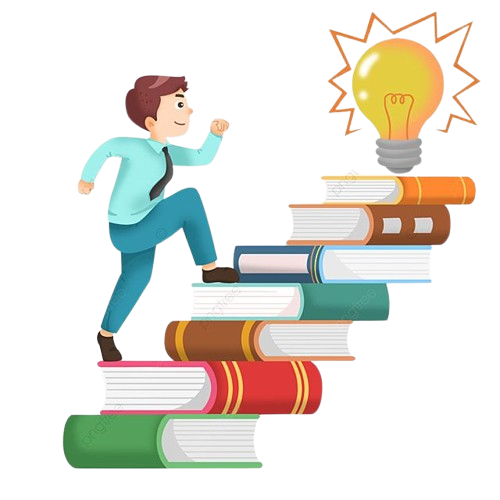
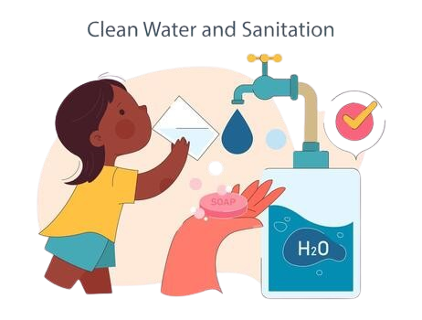
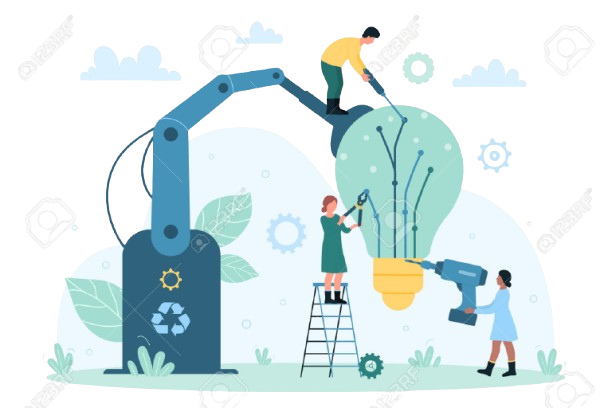
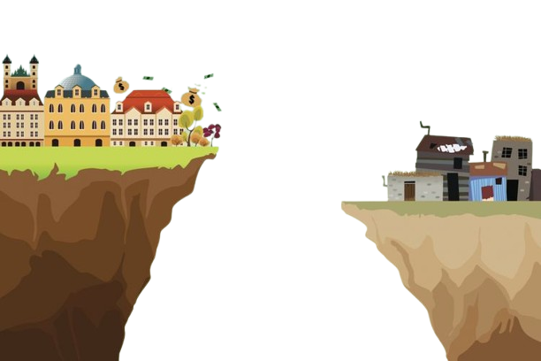
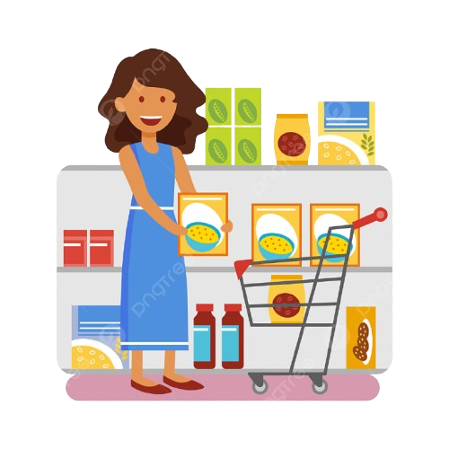
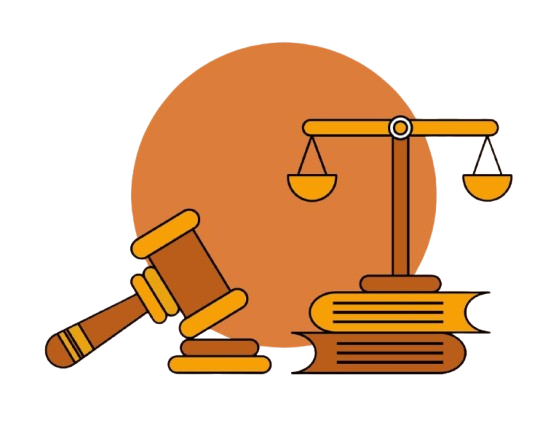
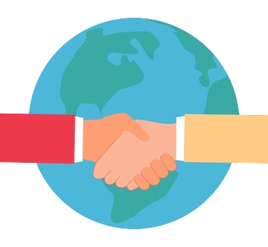
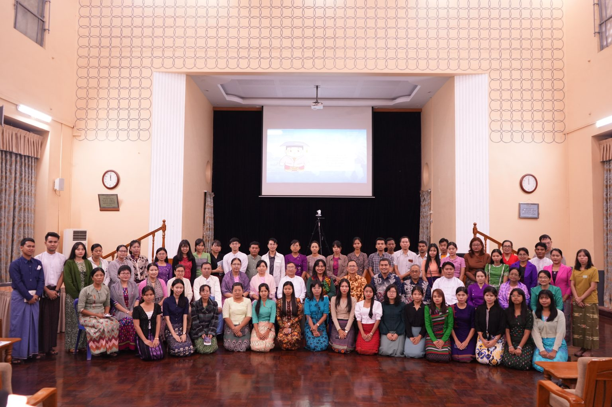

⋆˚୨ৎ Pengenalan Mengenai SDGs ୨ৎ˚⋆
SDG merupakan singkatan dari "Susainable Development Goals" atau tujuan pembangunan berkelanjutan.
SDG sendiri adalah sebuah agenda global yang disepakati oleh PBB untuk mencapai kesejahteraan manusia dan lingkungan secara berkelanjutan pada tahun 2030.
Agenda ini mencakup 17 tujuan, 169 target, dan 241 indikator untuk mengakhiri kemiskinan, mengurangi ketidaksetaraan, dan melindungi planet bumi.
Tujuan utama dari SDG:
- Mengakhiri kemiskinan: bukan hanya dalam hal finansial tapi juga akses terhadap fasilitas pendidikan, kesehatan, dll.
- Meningkatkan kesejahteraan ekonomi dan sosial: mengurangi kesenjangan sosial dan menciptakan pertumbuhan ekonomi yang inklusif
- Melindungi lingkungan: Menjaga kelestarian kekayaan alam baik di daratan maupun lautan serta mengatasi perubahan iklim
- Menciptakan perdamaian dan keadilan: membangun kelembagaan yang tangguh dan memastikan semua orang hidup dalam kedamaian.
⋆˚୨ৎ Bentuk-bentuk SDGs ୨ৎ˚⋆
4. Pendidikan Berkualitas

6. Air Bersih & Sanitasi

8. Pekerjaan Layak

9. Industri & Inovasi

10. Mengurangi Kesenjangan

11. Kota & Pemukiman

12. Konsumsi Berkelanjutan

16. Perdamaian & Keadilan

17. Kemitraan Global

💵 Hambatan dan Tantangan 🏗️
Ada beberapa hambatan dan tantangan dalam menjalankan dan melaksanakan bentuk-bentuk SDGs antara lain
kesenjangan sosial dan ekonomi, masalah lingkungan, keterbatasan pendanaan, dan
kelemahan dalam tata kelola dan implementasi kebijakan.
Kesenjangan sosial dan ekonomi dapat
menghambat pencapaian pembangunan yang merata. Kelompok marjinal (seperti masyarakat adat, perempuan, dan penyandang disabilitas)
seringkali tidak memiliki akses yang setara terhadap layanan dasar dan peluang ekonomi.
Kesenjangan ini diperburuk oleh masalah seperti diskriminasi, konflik, dan ketidaksetaraan akses terhadap pendidikan dan layanan kesehatan.
Masalah lingkungan lebih merujuk kepada perubahan iklim, polusi, eksploitasi sumber daya alam secara berlebihan dan
masalah-masalah yang cenderung harus ditangani dengan segera. Hilangnya keanekaragaman hayati dan isu pemanfaatan
lahan juga menjadi tantangan serius.
Keterbatasan Pendanaan dapat berdampak secara negatif dalam pembagunan fasilitas
masyarakat di tempat-tempat yang terpencil karena biasanya membutuhkan dana yang cenderung lebih banyak.
Kebutuhan untuk SDGs sangat besar dan terus meningkat yang menyebabkan adanya financing gap yaang cukup signifikan,
terutama pada jaman pascapandemi. Kurangnya dana untuk SDGs juga merupakan salah satu hambatan utama
untuk melaksanakan program SDGs dengan efektif.
Tata kelola dan implementasi sangat penting terhadap efektivitas berjalannya SDGs.
Kurangnya tata kelola yang tepat lemahnya penegakan hukum menjadi hambatan utama dalam mencapai tujuan
yang berkaitan dengan keadilan dan perdamaian. Praktek implementasi kebijakan seringkali tidak optimal akibat
lemahnya pengawasan, tumpang tindih regulasi, dan kurangnya sinergi antar lembaga.
🛠️ Potensi SDGs 📈
Potensi SDGs sangatlah besar karena bertujuan untuk menciptakan dunia yang lebih baik
melalui pembangunan berkelanjutan yang mencakup berbagai aspek antara lain aspek ekonomi, sosial, dan lingkungan.
Potensi tersebut diwujudkan dalam berbagai bidang contohnya peningkatan kualitas pendidikan,
kesetaraan gender, pengatasaan kemiskinan, dll.
Potensi SDG dalam berbagai bidang:
- Ekonomi: Menciptakan peluang ekonomi dan meningkatkan kesejahteraan dengan pengelolaan limbah dengan baik dan benar serta dari UMKM
- Sosial: Mendorong kesejahteraan masyarakat dengan meningkatkan kesetaraan gender dan meningkatkan kualitas
pendidikan secara merata di seluruh wilayah Indonesia
- Lingkungan: Mengatasi perubahan iklim melalui transisi ke energi terbarukan, konservasi hutan,
pertanian cerdas iklim, dan pengelolaan limbah yang lebih baik.
- Tata Kelola: Mempersatukan tujuan program SDGs di daerah-daerah terpencil melalui program terpadu
untuk mengembangkan bidang ekonomi, pendidikan, sosial, lingkungan dan tata kelola di wilayah tersebut.
🔄️ Bentuk-bentuk Kerjasama 🤝
Kerjasama antar negara terbagi menjadi 3 jenis yaitu kerjasama bilateral, multilateral,
regional. Kerjasama bilateral merupakan kerjasama antar 2 negara saja. Kerjasama multilateral merupakan
kerjasama lebih dari 2 negara dan biasanya dalam organisasi internasional, contohnya ASEAN, PBB, dll. Kerjasama
regional merupakan kerjasama antarnegara dalam 1 kawasan/region tertentu, contohnya: ASEAN (asia tenggara), APEC (asia pasifik).
Contoh Kerjasama Bilateral (Indonesia - Myanmar) | SDGs No. 4: Pendidikan Berkualitas

Pada tanggal 6-9 November 2024, Universitas Gajah Mada melakukan sebuah kunjungan ke
Universitas Yangon, Myanmmar. Kegiatan ini bertujuan untuk bersosialisasi dan mempromosikan calon mahasiswa
di Myanmmar untuk bekerja sama dengan kedutaan besar Republik Indonesia di Myanmmar. Delegasi UGM disambut oleh
Kuasa Usaha Ad Interim (KUAI) KBRI Yangon, Bapak M. Arif Hidayatullah. Arif menyampaikan rasa terima kasih dan
apresiasi atas kunjungan UGM. ”Saya mengapresiasi kunjungan UGM di tengah situasi isu politik di Republic of Myanmar saat ini”, ungkapnya.
UGM berkesempatan untuk melakukan courtesy meeting dengan Rektor Universitas Yangon dan mendiskusikan
mengenai pengembangan kerja sama di bidang art dan sciences. Hasilnya, telah disepakati bahwa kedepannya, pendirian nota kesepahaman
antara UGM dan Universitas Yangon untuk memayungi kerja sama. Sedangkan mobilitas mahasiswa akan mengikuti skema
AUN, karena UGM dan Universitas Yangon merupakan anggota konsorsium tersebut. Ada juga kegiatan
promosi program pascasarjana dimana Wakil Rektor Bidang Pendidikan dan Pengajaran, Prof. Dr. Wening Udasmoro S.S., S.Hum., DEA
mempresentasikan materi bagi staf dan mahasiswa tingkat akhir di Universitas Yangon. Acara tersebut diikuti oleh sekitar
100 orang dari berbagai bidang studi. Agenda mereka selanjutnya adalah sosialisasi mengenai program Internasional
Undergraduate Program (IUP) ditujukan bagi kepala sekolah, staff, orang tua, dan siswa SMA di Myanmar. Presentasi
disampaikan oleh Wakil Rektor Bidang Pendidikan dan Pengajaran, Prof. Dr. Wening Udasmoro S.S., S.Hum., DEA. Selanjutnya,
diberi kesempatan bagi yang berminat untuk melakukan one on one konsultasi terkait dengan sistem pendaftaran
mahasiswa maupun pengembangan kerja sama dengan perguruan tinggi. Setelah kegiatan tersebut, diadakan
juga sosialisasi program pascasarjana dan diskusi mengenai student exchange, short program, hingga kerja sama di
bidang Public Health. Menurut Wakil Rektor Bidang Pendidikan dan Pengajaran, Prof. Dr. Wening Udasmoro S.S., S.Hum., DEA,
kedepannya UGM akan mengembangkan kerja sama pendidikan ke negara lain, ”Saya berharap ini akan menguatkan kerja
sama melalui pengembangan kapasitas antar negara-negara di wilayah ASEAN”, ujarnya.
Sumber:
Kunjungan ke Myanmar: UGM Perkuat Kerja Sama Pendidikan dan Pengembangan Kapasitas Antar Negara Wilayah ASEAN
← Kembali ke Home 🏠